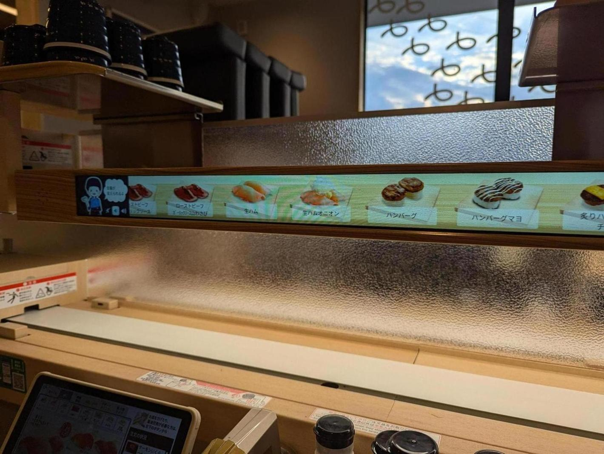

新しくできたはま寿司行ったら、仮想的な回転寿司があった。これは常に右から左に動いていて、触って注文ができる。また、スワイプすることで早送りや巻き戻しができる。 なんとなく面白くてしばらく触ったが、結局ほぼ普通のタブレットから注文した。慣れていなかっただけではある。
本当に回転する回転寿司では、わざと寿司の並び順をランダムにするようにして、客を飽きさせないようにする、というのを聞いたことがある。この仮想回転寿司にはその機能はないようで、タブレットと同じ順番で寿司が流れているようだ。 うまいなと思ったのは、この画面では対象の寿司の価格が分からないようになっている。寿司を選択して注文確認に遷移すればわかるのだが、この時点ではわからない。